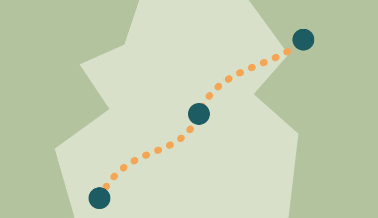

FIELD MENU / 01–04
Choose your
kind of wild.
Four ways to meet the landscape. Each experience is a starting point—timing and conditions can change what is possible.

LAND · 2–3 HOURSWalk the Falls
Explore Zambia-side viewpoints with a guide who knows when to pause, where the spray catches the light and how to move respectfully through rainforest paths.
- Guided viewpoints and rainforest walk
- Seasonal trail conditions
- Park entry fee listed separately in quote
Illustrative from $38 / guest
Enquire ↗ 
WATER · 2 HOURSRiver at Dusk
A slow sunset cruise with time to watch riverbanks, notice birdlife and enjoy the changing colour of the sky.
- Small-group river outing
- Seasonal departure time
- Refreshments subject to operator
Illustrative from $52 / guest
Enquire ↗ 
WILDLIFE · 3–4 HOURSQuiet Tracks
Travel with a qualified local guide into Mosi-oa-Tunya's wildlife landscape. Sightings are never guaranteed; the focus is patience, distance and respect.
- Departure subject to conditions
- Wildlife interpretation
- Conservation-minded viewing
Illustrative from $68 / guest
Enquire ↗ 
CROSS-BORDER · FULL DAYChobe, in a day
A Botswana excursion concept with border logistics, guided game viewing and a river component arranged around confirmed operators.
- Passport and entry requirements must be checked
- Border transfers and operator confirmation required
- Timing depends on border and park conditions
Illustrative from $145 / guest
Enquire ↗ Prices are fictional placeholders. Inclusions, suppliers, fees and availability require confirmation.